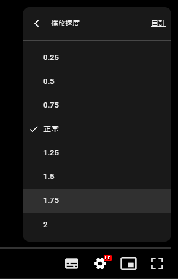

各位看影片時可以透過以下設置，讓您觀看教學更清楚喔～
在顧問論壇中觀看可以隨時發問，我也比較好在論壇圖文回覆，相同類似問題也可以一次讓各位知道～
如果透過另開新視窗觀看，在您手機或是平板也可以使用註解加入您的意見，我也可以手機及時文字回覆喔！
小提醒如遇播放問題，可改用「彈出式視窗」全螢幕觀看影片。
使用電腦：全螢幕開啟方式

影片觀看技巧



使用手機：全螢幕開啟方式

課程影片建議串流網速注意事項：https://www.autocad-tw.com/t28666-topic